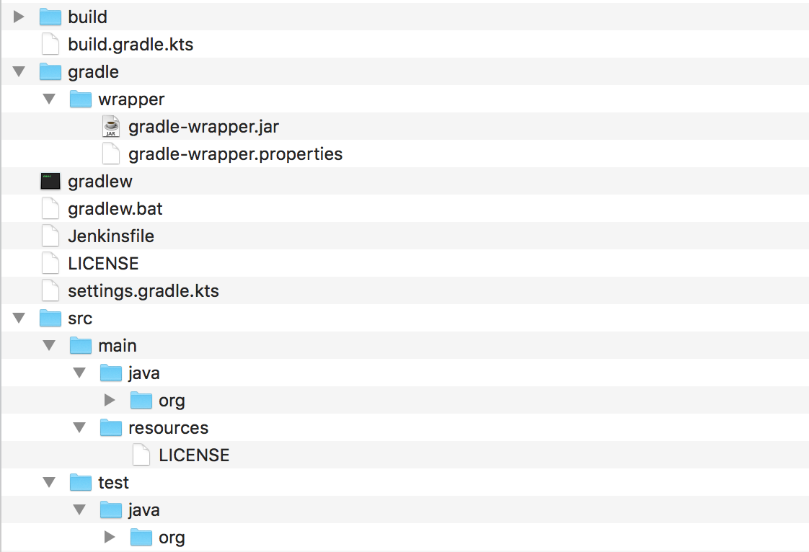
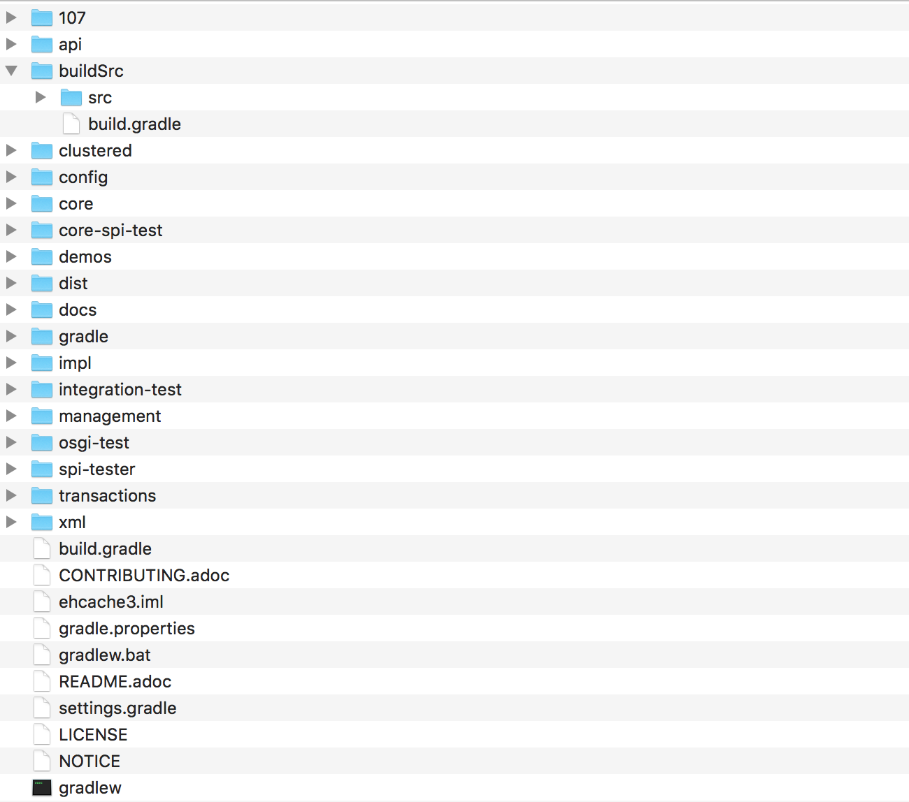

speaker {
name 'Louis Jacomet'
company 'Gradle Inc'
title 'Lead Software Engineer'
past ['Terracotta / Ehcache', 'Freelance consultant'],
failures Stream.of(bugs),
twitter '@ljacomet',
github 'ljacomet',
extraDescription '''Not fully figured out
how to stay out of management?!?'''
}Why Gradle?
Who am I
What is Gradle?
Gradle’s purpose
Gradle is a build and automation tool.
JVM based
Implemented in Java
100% Free Open Source - Apache Standard License 2.0
Agnostic Build System
Java ecosystem
Groovy, Kotlin, Scala, …
Native ecosystem
C, C++, Swift, …
Android
Misc
Go, Asciidoctor, …
Gradle in figures
> 6.0M downloads / month
35+ Gradle Engineers
300K builds/week @ LinkedIn
Gradle Inc.
The company behind Gradle.
Build Happiness
Employs full time engineers
Providing Gradle Build Scans and Gradle Enterprise
(Gradle consulting, support, development services etc.)
(Training: online, public and in-house)
Gradle is hiring!
Fully distributed development team
Exciting project used by millions
Build tool team and Gradle enterprise positions
If anything you hear from now on sounds like a great problem to solve,
Talk to us!
Developer productivity
Influences on
developer productivity
IDE
Languages and frameworks
Good hardware
Training
…
Food in cafeteria
Developer productivity
Fast feedback cycles
High degree of automation
Faster debugging
Fast feedback cycles
Maximum build performance
Measure and optimize
Build reliability
Maximum build performance
Maximum build performance is the maximum achievable performance of a build system for your code base.
Personal experience
Large Java multi project with 20+ projects
Using Maven as the build tool
Minutes to get a product archive with
mvn clean package -DskipTestsFull build on CI takes 2h30+
Migrated to Gradle
Seconds to get a product archive with
./gradlew assembleFull build on CI takes 40 minutes, thanks to parallelization
How
Compile avoidance
Incremental compilation
Incremental builds
Build cache
Measure and optimize
Need data
CI server captures times
What about developer builds
High degree of automation
Composite builds
Source dependencies
Faster debugging
Build scans
Agenda
Java Gradle build anatomy
Incremental builds
Build cache
Build scans
Anatomy of a Gradle project
Gradle is based on a set of conventions.
Some inherited from the history of Java build systems:
src/main/javasrc/test/resources
Others brought by Gradle:
The name of the project is the name of the containing folder
A simple project

A multi project build

Demo
The build file
By default, named
build.gradlewhich can be configured.Describes what the build is about through configuration.
Companion files
settings.gradle: Configure the project(s) that compose the buildgradle.properties: Defines properties specific to the build, which can be overridden
Additional build artifacts
Directories:
buildSrc.gradlebuild
The Gradle Wrapper
Bootstraps Gradle for project contributors
Project controls Gradle version
Compile avoidance
Compile classpath leakage
A typical dependency graph
Cascading recompilation
Cascading recompilation
But also with side effects:
compile dependencies leak to the downstream consumers
hard to upgrade dependencies without breaking clients
Separating API and implementation
Example
import com.acme.model.Person;
import com.google.common.collect.ImmutableSet;
import com.google.common.collect.Iterables;
...
public Set<String> getNames(Set<Person> persons) {
return ImmutableSet.copyOf(Iterables.transform(persons, TO_NAME))
}Reality is …
// exported dependency
import com.acme.model.Person;
// internal dependencies
import com.google.common.collect.ImmutableSet;
import com.google.common.collect.Iterables;
...
public Set<String> getNames(Set<Person> persons) {
return ImmutableSet.copyOf(
Iterables.transform(persons, TO_NAME))
}Matching Gradle build
// This component has an API and an implementation
apply plugin: 'java-library'
dependencies {
api project(':model')
implementation 'com.google.guava:guava:18.0'
}API vs impl graph
Change to impl dependency
Change to API dependency
Consumers are not equal
Compile classpath
What does a compiler care about?
Input: jars, or class directories
Jar: class files
Class file: both API and implementation
Compile classpath
What we provide to the compiler
public class Foo {
private int x = 123;
public int getX() { return x; }
public int getSquaredX() { return x * x; }
}Compile classpath
What the compiler cares about:
public class Foo {
public int getX()
public int getSquaredX()
}Compile classpath
But it could also be
public class Foo {
public int getSquaredX()
public int getX()
}only public signatures matter
Compile classpath snapshotting
Compute a hash of the signature of class :
aedb00fdCombine hashes of all classes :
e45bdc17Combine hashes of all input on classpath:
4500fc1Result: hash of the compile classpath
Only consists of what is relevant to the
javaccompiler
Runtime classpath
What does the runtime care about?
Runtime classpath
What does the runtime care about:
public class Foo {
private int x = 123;
public int getX() { return x; }
public int getSquaredX() { return x * x; }
}At runtime, everything matters, from classes to resources.
Compile vs runtime classpath
In practice:
@InputFiles
@CompileClasspath
FileCollection getCompileClasspath() { ... }
@InputFiles
@Classpath
FileCollection getRuntimeClasspath() { ... }Compile avoidance
compile and runtime classpath have different semantics
Gradle makes the difference
Ignores irrelevant (non ABI) changes to compile classpath
Effect on recompilations
Icing on the cake
Upgrade a dependency from
1.0.1to1.0.2If ABI hasn’t changed, Gradle will not recompile
Even if the name of the jar is different (
mydep-1.0.1.jarvsmydep-1.0.2.jar)Because only contents matter
Incremental compilation
Basics
Given a set of source files
Only compile the files which have changed…
and their dependencies
Language specific
In practice
import org.apache.commons.math3.complex.Complex;
public class Library {
public Complex someLibraryMethod() {
return Complex.I;
}
}Complexis a dependency ofLibraryif
Complexis changed, we need to recompileLibraryif
ComplexUtilsis changed, no need to recompile
Gotcha
import org.apache.commons.math3.dfp.Dfp;
public class LibraryUtils {
public static int getMaxExp() {
return Dfp.MAX_EXP;
}
}Dfpis a dependency ofLibraryUtilsso if
MAX_EXPchanges, we should recompileLibraryUtils, right?
Wait a minute…
javap -v build/classes/java/main/LibraryUtils.class
...
public static int getMaxExp();
descriptor: ()I
flags: ACC_PUBLIC, ACC_STATIC
Code:
stack=1, locals=0, args_size=0
0: ldc #3 // int 32768
2: ireturnreference to
Dfpis gone!compiler inlines some constants
JLS says compiler doesn’t have to add the dependent class to constant pool
What Gradle does
Analyze all bytecode of all classes
Record which constants are used in which file
Whenever a producer changes, check if a constant changed
If yes, recompile everything
Incremental builds
Why does it matter?
Gradle is meant for incremental builds
cleanis a waste of time
The incrementality test
Run a build
Run again with no change
If a task was re-executed, time is wasted
Investigate!
Properly writing tasks
Example: building a shaded jar
task shadedJar(type: ShadedJar) {
jarFile = file("$buildDir/libs/shaded.jar")
classpath = configurations.runtime
mapping = ['org.apache': 'shaded.org.apache']
}What are the task inputs?
What are the task outputs?
What if one of them changes?
Declaring inputs
public class ShadedJar extends DefaultTask {
...
@InputFiles
FileCollection getClasspath() { ... }
@Input
Map<String, String> getMapping() { ... }
}Declaring outputs
public class ShadedJar extends DefaultTask {
...
@OutputFile
File getJarFile() { ... }
}Know why your task is out-of-date

Incremental task inputs
Know precisely which files have changed
Task action can perform the minimal amount of work
Incremental task inputs
@TaskAction
public void execute(IncrementalTaskInputs inputs) {
if (!inputs.isIncremental()) {
// clean build, for example
// ...
} else {
inputs.outOfDate(change ->
if (change.isAdded()) {
...
} else if (change.isRemoved()) {
...
} else {
...
}
});
}
}Build cache
How does it work?
Gradle is reusing results
from last time
when we ran this build
on this machine.
Gradle can do better
Why not…
Reuse results
from anytime before
when we ran any build
anywhere.
In practice
$> gradle --build-cache assemble
Build cache is an incubating feature.
:compileJava FROM-CACHE
:processResources
:classes
:jar
:assemble
BUILD SUCCESSFULDemo
Build cache concepts
Build cache key
Calculated using:
Task implementation (including Gradle version)
Task action implementations
Names of the task outputs
Names and values of the task inputs
Note: Task name is not an input
Builds on top oif incremental builds
Get reliable incremental builds first
Next work on making them cacheable
Cacheable tasks require additional information for path sensitivity
Repeatable outputs
Same inputs must produce same outputs
May be byte-for-byte equivalent
May be semantically equivalent (with normalization)
Normalization
@InputFiles- no normalization@CompileClasspath- Extracts ABI from classes@Classpath- treats files as a runtime Java classpathConfigurable runtime normalization to ignore files
Deploying a build cache
Stable for Java, Groovy and Scala projects
Gradle Enterprise provides a backend for managing, monitoring and replicating caches
Dockerhub: gradle/build-cache-node
Build scans
What are build scans?
Persistent record of what happened during a build
Permanent and shareable URL
For developers and build engineers
Demo
Measure and optimize
Need data
Use the Gradle Enterprise export API